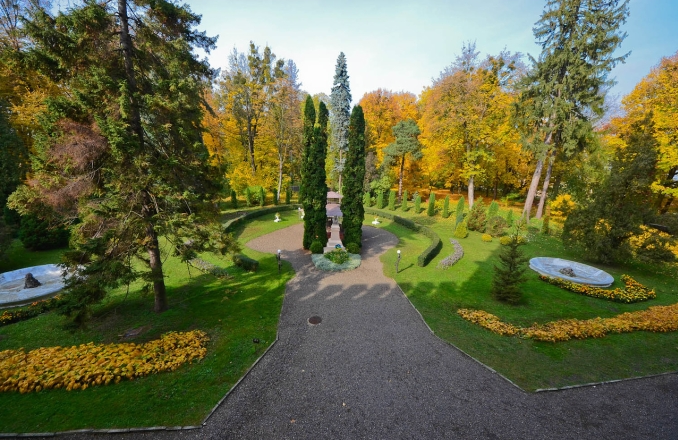

За будівлями резиденції розкинувся ландшафтний парк площею 5 гектарів, закладений одночасно з початком будівництва комплексу. Це ідеальне місце для роздумів та відпочинку студентів.
У парку можна знайти штучні гроти, які були популярними в епоху романтизму. Серед рослинності виділяються тюльпанове дерево, червоний дуб та ялиця кавказька. Багато дерев мають вік понад 100 років і є свідками заснування університету.
У центрі парку встановлено пам'ятник архітектору, який дивиться на свій шедевр. Кажуть, що парк планувався так, щоб з кожної його точки відкривався новий, неповторний вигляд на куполи церкви та корпуси Резиденції.